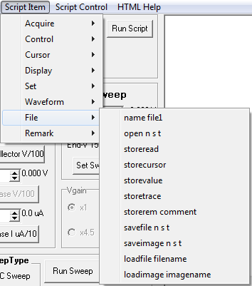

name filename Sets the
name used in file open operations. The text following the
name command is assigned to the variable
name.
filename can contain paths if so desired. e.g.
name C:\folder\test1
open n s t Opens a file for writing. The file name is controled by options
n,
s, and
t. Options can be combined.
n uses
name,
s uses the serial number
S/N text, and
t
adds a date/time stamp. The new file will have a .txt extension. Each
sucsessive store operation opens the file, appends the data, then
closes the file. Subsequent Save and Load operations write or read all
data then close the file. Save operations overwrite the old file data.
storeread Saves the
Read Voltages VC, IC, VB, and IB as text to the opened file.
storecursor Saves the cursor values VC, IC, ref V. and ref. I as text to the opened file.
storevalue Saves the current calcuated parameter value as text to the opened file.
storetrace Saves the current trace voltage and current data to the opened file.
storerem comment Saves the
comment text to the opened file.
savefile n s t Saves the trace data to a file name controled by options
n,
s, and
t. Options can be combined.
n uses
name,
s uses the serial number
S/N text, and
t adds a date/time stamp. The file is saved with a .txt extension. This data format used is the same as for
Data File Save.
saveimage n s t Saves the plot image with the file name controled by options
n,
s, and
t. Options can be combined.
n uses
name,
s uses the serial number
S/N text, and
t adds a date/time stamp. The image is saved with a .bmp extension.
loadfile filename Loads storted traces using
filename. The .txt extension is added to filename.
This is the same as the
Data File Load except the open file dialog is not used.
loadimage imagename Loads a bit mapped image using
imagename as the file name. The .bmp extension is added to filename.
The
image is temporary as it is placed in the plot area. It will be
overwritten after a sweep or redraw operation. This is used for showing
examples.
Script Item
Main